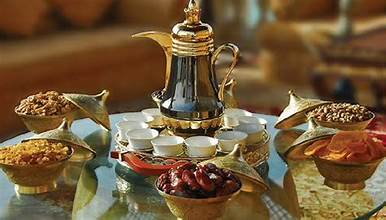

This is the best places to see in Saudi Arabia
There are lots of places to go and see in Saudi Arabia. Here is a small sellection
al-Masjid al-Haram
Masjid al-Haram (Arabic: ٱَلْمَسْجِدُ ٱلْحَرَام, romanized: al-Masjid al-Ḥarām, lit.'The Sacred Mosque') , also known as the Sacred Mosque or the Great Mosque of Mecca, is considered to be the most significant mosque in Islam.It encloses the vicinity of the Kaaba in Mecca, in the Mecca Province of Saudi Arabia. It is among the pilgrimage sites associated with the Hajj, which every Muslim must perform at least once in their lives if able. It is also the main site for the performance of ʿUmrah, the lesser pilgrimage that can be undertaken any time of the year. The rites of both pilgrimages include circumambulating the Kaaba within the mosque. The Great Mosque includes other important significant sites, such as the Black Stone, the Zamzam Well, Maqam Ibrahim, and the hills of Safa and Marwa.
al-Masjid al-Nabawi
he Prophet's Mosque (Arabic: ٱلْمَسْجِد ٱلنَّبَوِي, romanized: al-Masjid al-Nabawī, lit. 'Mosque of the Prophet') is the second mosque built by the Islamic prophet Muhammad in Medina, after the Quba Mosque, as well as the second largest mosque and holiest site in Islam, after the Masjid al-Haram in Mecca, in the Saudi region of the Hejaz.The mosque is located at the heart of Medina, and is a major site of pilgrimage that falls under the purview of the Custodian of the Two Holy Mosques.
